כל כיוון בנוי סביב רעיון אחד מעולם האמנות, עם אותו תוכן בדיוק: יום ראשון, 1 בנובמבר, חובב אמנות בתל אביב שעוקב אחרי שלושה אמנים. בכל אחד יש אמנים, תערוכות ויצירות שעוקבים אחריהם, מה נפתח לאחרונה ומה רץ עכשיו קרוב. אין בהם סטורי, הרשמה לאמנים, ערים, מפה או תמונות ענק.
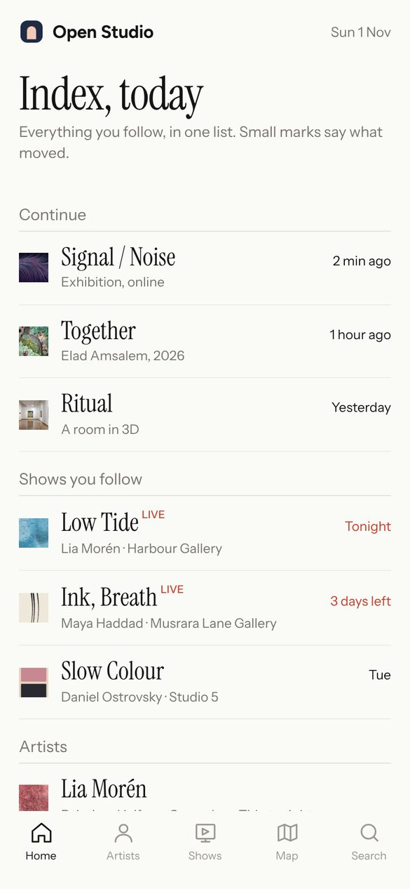
1. האינדקס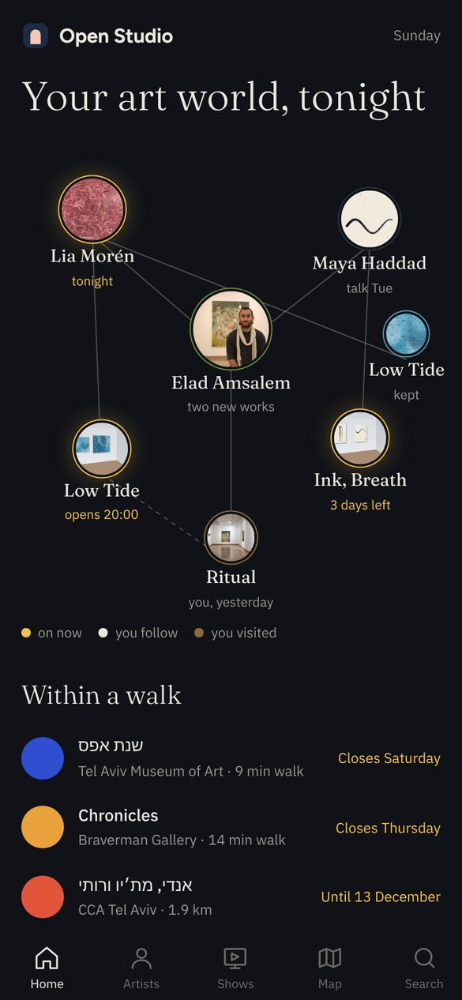
2. קבוצת כוכבים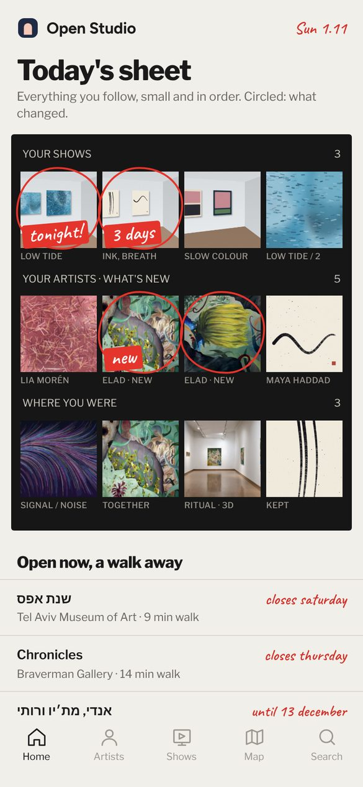
3. גיליון הקונטקט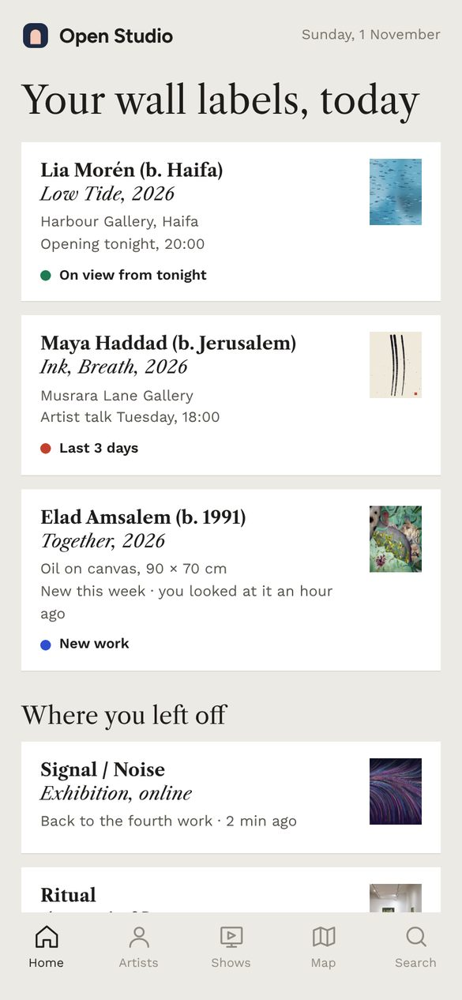
4. תווית הקיר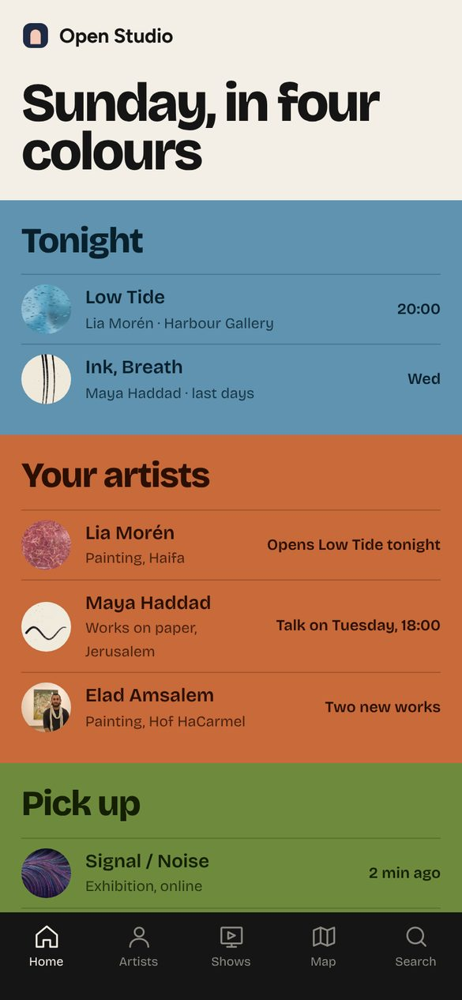
5. פרקי צבע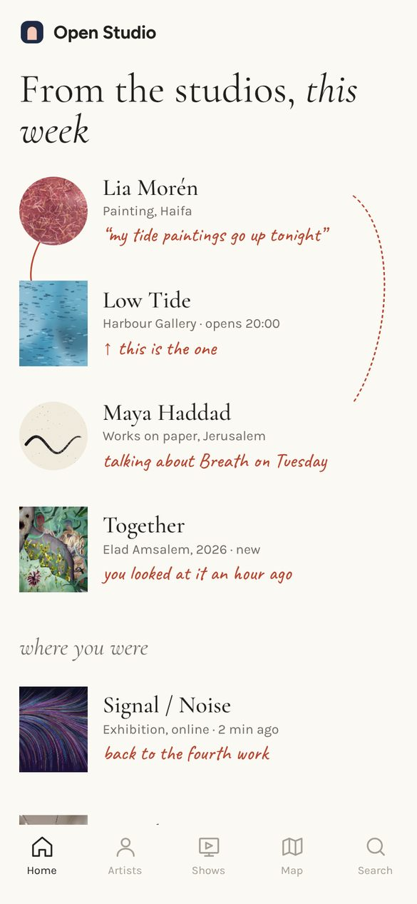
6. כתב היד של האמן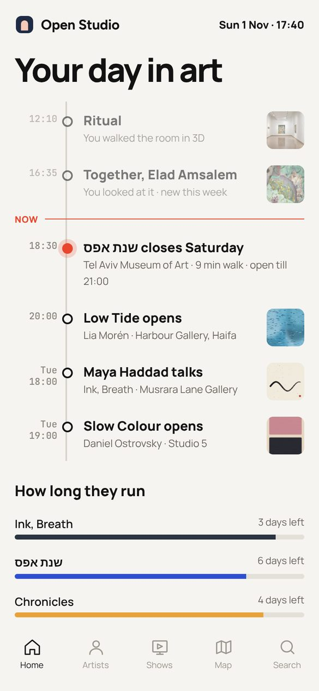
7. היום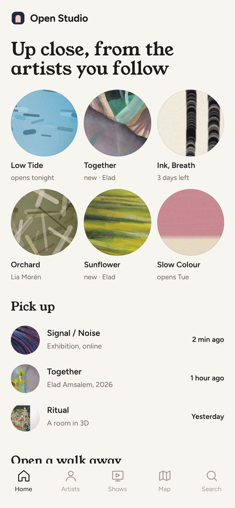
8. מקרוב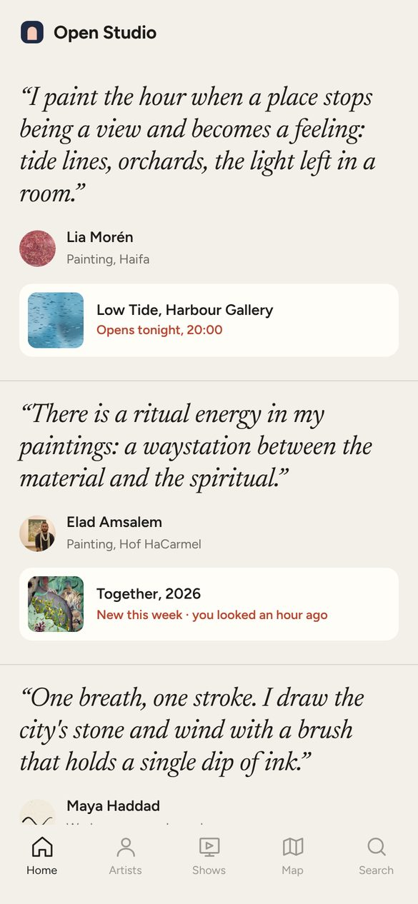
9. במילים שלהם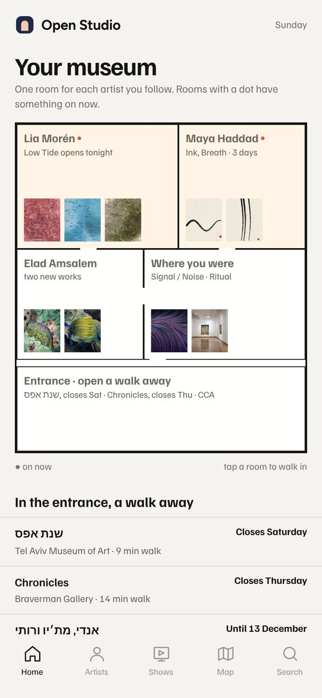
10. המוזיאון שלךOpen Studio · נובמבר 2026
הכול כרשימה טיפוגרפית אחת, כמו אינדקס בסוף קטלוג: שם גדול, תמונה זעירה, וסימן קטן שאומר מה זז (LIVE, "3 days left"). אין תמונות גדולות בכלל, והקשרים כתובים כהפניות ("← Opens Low Tide tonight").
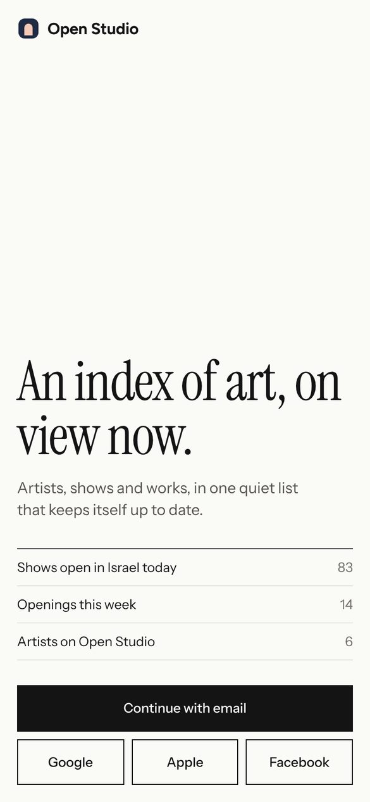
Open Studio · עשרה כיוונים · 2
מי שאתה עוקב אחריו מופיע כנקודות מחוברות בקווים דקים: אמן לתערוכה, תערוכה לחדר שביקרת בו. מה שקורה עכשיו זוהר בצהוב. התקשורת בין הדברים היא העיצוב עצמו, והקשרים נראים במבט אחד.
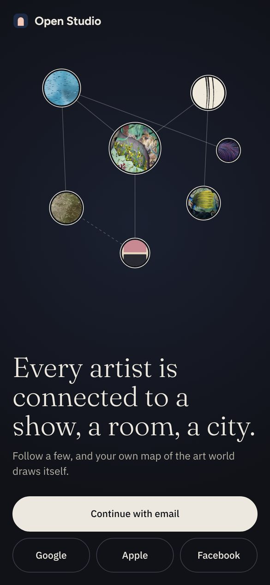
Open Studio · עשרה כיוונים · 3
הכול בתמונות קטנות בפסים, כמו גיליון קונטקט של צלם. מה שהשתנה מסומן בעיגול אדום ובכתב יד ("tonight!", "new"), כאילו אוצר עבר עם עיפרון. התמונות קטנות, והעין של מישהו מכוונת אותך.
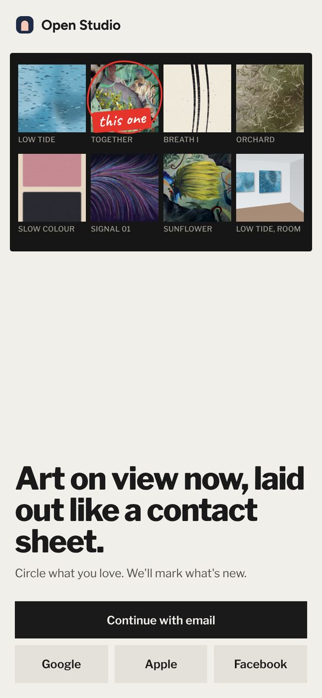
Open Studio · עשרה כיוונים · 4
כל דבר הוא תווית מוזיאון: אמן, כותרת ושנה, טכניקה ומידות, ונקודה קטנה צבעונית (כמו מדבקת "נמכר" בגלריה) שאומרת מה מצבו. ירוק: מוצג. אדום: ימים אחרונים. כחול: חדש. השפה של הגלריה עצמה, מאוד נקייה ומאוד ברורה.
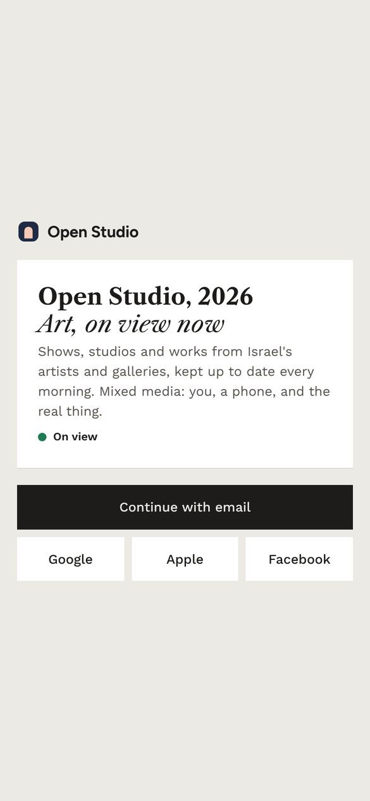
Open Studio · עשרה כיוונים · 5
הבית מחולק לפרקים, כל פרק בצבע שטוח שנלקח מעבודה של מי שאתה עוקב אחריו: "Tonight" בכחול של Low Tide, "Your artists" בכתום של Slow Colour. התמונות קטנות ועגולות, והצבע עושה את העבודה. צבעוני מאוד, ונשאר מסודר.
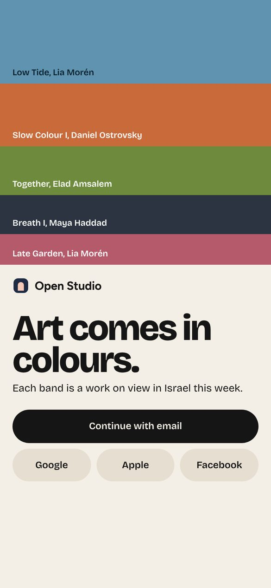
Open Studio · עשרה כיוונים · 6
הצד האישי של היוצרים במרכז: ליד כל דבר משפט קצר בכתב יד, כאילו האמן או האוצר כתבו בשוליים ("my tide paintings go up tonight"). קווי דיו דקים מחברים בין אמן לתערוכה שלו. אלגנטי, ספרותי ואינטימי.
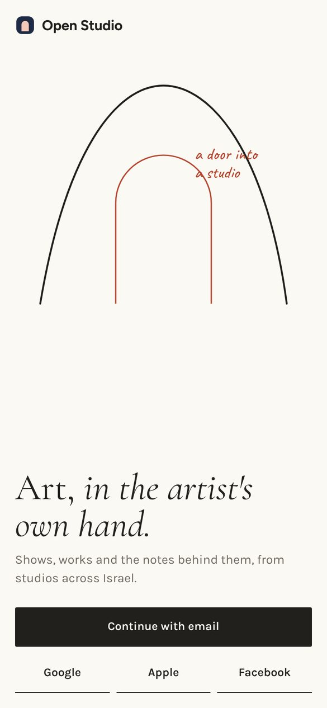
Open Studio · עשרה כיוונים · 7
הבית הוא ציר זמן של היום שלך, עם קו "NOW" אדום. מעליו מה שראית (חלש), ומתחתיו מה שקורה הערב ומחר. בתחתית, פסים קטנים שמראים כמה זמן נשאר לכל תערוכה. הכי חי ושימושי, ומשדר "זה קורה עכשיו".
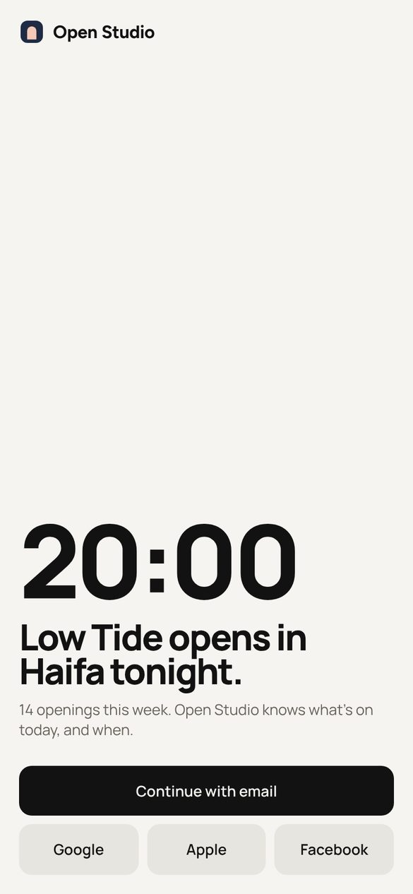
Open Studio · עשרה כיוונים · 8
במקום תמונה שלמה וגדולה, עיגול קטן של פרט מתוך העבודה: משיכת מכחול, טקסטורה, צבע. זה מסקרן, אינטימי ומרגיש כמו לעמוד קרוב לקנבס. התמונה המלאה מגיעה בלחיצה, וכך התמונות קטנות ומדברות זו עם זו בשפה אחת.
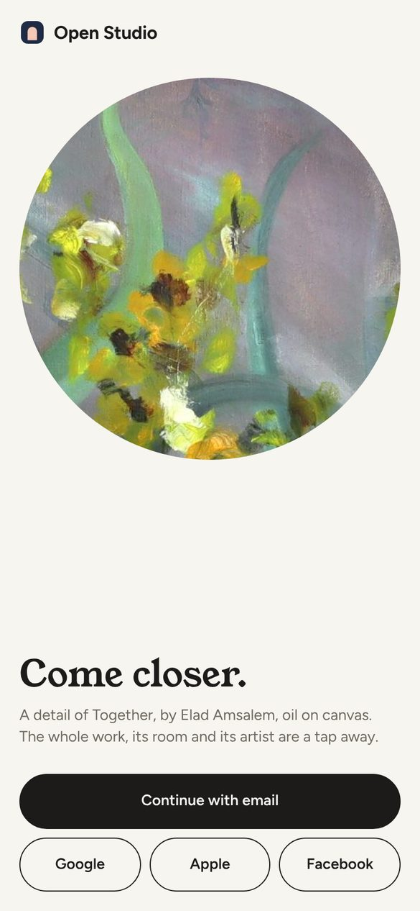
Open Studio · עשרה כיוונים · 9
האמנים מדברים ראשונים: כל פריט נפתח במשפט של האמן עצמו, בכתב נטוי גדול, ורק אחריו תמונה קטנה ומה קורה ("Opens tonight"). הצד האישי של היוצרים הוא השער לכל דבר. הכי אנושי ופחות "פיד".
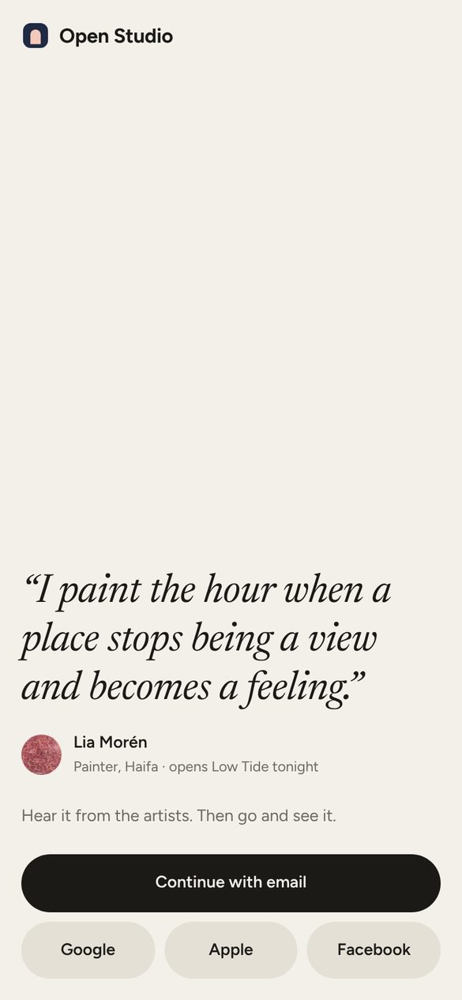
Open Studio · עשרה כיוונים · 10
הבית הוא תוכנית קומה של מוזיאון פרטי. לכל אמן שאתה עוקב אחריו יש חדר עם עבודות קטנות על הקיר, וחדר שקורה בו משהו מסומן בנקודה. "Where you were" הוא חדר, והכניסה היא מה שפתוח סביבך. מתחבר ישר לסיורים בתלת ממד.
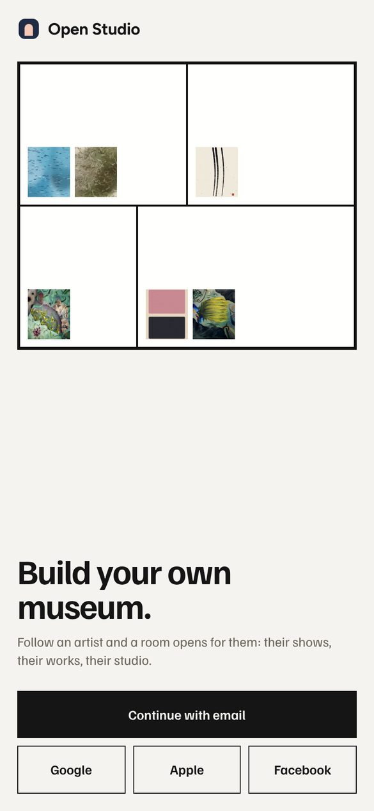
Open Studio · עשרה כיוונים · 11
שילוב אפשרי: עמוד הבית בנוי כמו "היום", וכל פריט בו הוא "תווית קיר" עם נקודת הצבע שלה.
סקיצות לבחירה, לא האפליקציה עצמה. התמונות והשמות מעולם הדמו; התערוכות הקרובות אמיתיות, מהקריאה היומית של המפה.
Open Studio · עשרה כיוונים · 12